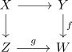
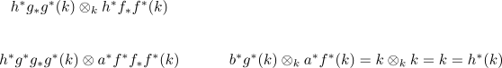

eilenberg-moore theorem for a field
Proposition
Let $k = R$ be a field and $f: Y \rightarrow W$ a map between anima Assume that
- for all $n$ the fiber $\mathrm{fib}(f)$ is a finite dimensional vector space
- $\pi_1(W)$ acts nilpotently on $H^n(\mathrm{fib}(f),k)$
Then a pullback

gets mapped to a pushout, i.e.
is an equivalence cf. pushout formula in commutative algebras in module spectra
Proof
Let $\mathcal{L} \in \mathrm{Fun}(W, \mathcal{D}(k))$ and by abuse of notation denote $k = r^*(k) = \mathrm{const}_W(k)$, then consider
Then $r_* = \mathrm{lim}_W: \mathrm{Fun}(W, \mathcal{D}(k)) \rightarrow \mathcal{D}(k)$ is a cannoical lax symmetric monoidal functor, since the left adjoint is symmetric monoidal functor
so
but this is given by
where we use associativity of infinity kan extensions
Now restrict to the special case $\mathcal{L} = f_* f^*(k)$. Then the LHS gives $C^*(Z) \otimes_{C^*(W)} C^*(Y)$ and the RHS admits a canonical map $g_* g^*(k) \otimes_{k} f_*f^*(k) \rightarrow h_*h^*(k)$
This map is adjoint to some other map

since precomposition is symmetric monoidal functor for the pointwise construction
we claim that under these assumption
w.l.o.g. assume that $W$ is connected:
then $\psi$ is an equivalence
But using natural equivalence between infinity functors and objectwise equivalence it suffices to show that $\psi$ is pointwise an equivalence. i.e. it is an equivalence after applying $\iota^*: \{w\} \hookrightarrow W$.
Exercise: